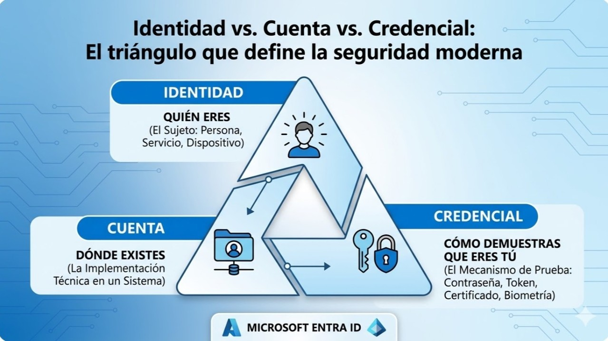

Este artículo explica, desde una perspectiva arquitectónica, la diferencia entre identidad, cuenta y credencial. Aunque suelen usarse como sinónimos, representan conceptos distintos que afectan directamente al diseño de seguridad, acceso, gobernanza y cumplimiento en cualquier arquitectura cloud.
Comprender esta separación conceptual es clave para diseñar entornos seguros, escalables y gobernables, especialmente cuando se integran múltiples sistemas, proveedores y dominios.
En seguridad, las palabras importan. Confundir identidad, cuenta y credencial lleva a errores de diseño que se traducen en accesos incorrectos, privilegios excesivos, auditorías incompletas y arquitecturas difíciles de gobernar.
Un arquitecto no piensa en “usuarios”, sino en entidades, representaciones y mecanismos de autenticación. Ese es el verdadero modelo mental.
La identidad es el concepto más abstracto y más importante. Es la representación de una entidad dentro de un sistema: una persona, un servicio, un dispositivo o una aplicación.
Una identidad define quién eres, no cómo accedes.
Características clave:
La identidad es el “sujeto” en un modelo de seguridad. Todo lo demás gira alrededor de ella.
La cuenta es la materialización técnica de una identidad dentro de un sistema específico. Mientras la identidad es conceptual, la cuenta es operativa.
Ejemplos:
La cuenta define:
Una identidad puede tener múltiples cuentas en distintos sistemas, pero todas representan al mismo sujeto.
La credencial es el elemento más concreto y más frágil del modelo. Es el mecanismo que permite demostrar la identidad.
Ejemplos:
La credencial no es la identidad. La credencial no es la cuenta. La credencial es solo la prueba. Y como toda prueba, puede expirar, revocarse, rotarse o comprometerse.
Un diseño maduro minimiza el uso de credenciales estáticas y favorece mecanismos modernos como autenticación sin contraseña, tokens de corta duración y claves administradas.
La forma más clara de entenderlo es esta:
Cuando estos tres conceptos se mezclan, aparecen problemas como:
Cuando se separan correctamente, la arquitectura se vuelve más segura, más gobernable y más fácil de automatizar.
En arquitecturas cloud modernas, la mejor cuenta para una aplicación es una Managed Identity. Este patrón evita secretos estáticos y delega la autenticación al plano de identidad de la plataforma.
Beneficios arquitectónicos:
Este enfoque materializa una arquitectura secretless: la aplicación accede a recursos mediante identidad administrada y RBAC de mínimo privilegio, sin almacenar contraseñas o llaves de larga vida.
En términos de Zero Trust, Managed Identities permite verificación explícita por identidad, contexto y autorización, reduciendo la dependencia de perímetros de red y secretos reutilizables.
Identidad, cuenta y credencial no son sinónimos: son capas distintas de un mismo modelo. La identidad define al sujeto, la cuenta lo representa en un sistema y la credencial demuestra que es quien dice ser.
Cuando un arquitecto entiende esta separación, puede diseñar políticas coherentes, accesos mínimos, automatización segura y gobernanza real. La seguridad no empieza en las herramientas: empieza en el modelo mental.